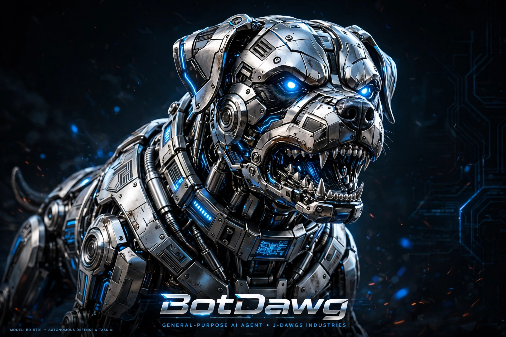

BotDawg is a general-purpose agent that is yours: it runs on your computer out of one folder, remembers your business, plans and runs multi-step work, and never comes back to J-Dawgs for anything. This page is the proof run behind that claim — every number below comes from a real run on 2026-11-24, and the misses are printed next to the hits.
General-purpose: 7 skills + your own taught routines Built-in J-Dawgs Prompt Generator Fully standalone — no J-Dawgs in the loop Transparent usage: estimate, live meter, your caps, failed runs free

The agent with a Rottweiler's work ethic. Loyal to one owner. Tireless. Doesn't back down from a job — and doesn't pretend a job is done when it isn't.
Yours, outright. $99.99 once. No subscription, no account with us, nothing phones home. He never has to come to J-Dawgs for anything — that's the rule he was built under.
General-purpose, not a one-trick bot. Research that names its sources (and says COULD NOT VERIFY when it can't), page watching with change reports, memory that persists, organizing, writing, proof runs — and the J-Dawgs Prompt Generator built in.
One dog, the whole pack's tricks. BotDawg was built from a hands-on study of the top ten AI agents — their best features, combined into a single agent. The jobs you'd spread across a shelf of separate agents, one dog takes on.
Make him yours in one screen. Name, personality, brand color, your facts, your job focus. No code.
Talk to him — the chat box, with his head right on it. New in v1.0.2: no forms, no commands to learn. Just type what you need in plain words and he answers, takes the job, and shows you the plan and the cost before he runs it. The same rules hold in chat — he drafts and prepares; he never sends, posts, buys, pays, deletes, or logs in as you. The package passed its own clean-unpack proof, 11 checks out of 11, chat included — and on November 24, 2026 it was triple-checked end to end from the shipped zip itself; the three small wording defects that turned up were fixed in v1.0.3, the version now on sale.
Honest to the bone. His proof runs are published below with the misses next to the hits. Every run shows its cost estimate first, the meter runs live, your caps rule, and failed or stopped runs cost nothing.
Limits printed, not hidden. V1 runs in built-in mode until you connect your own model access (plain-words setup included); no voice, phone, or third-party integrations yet.
House guarantee: if we can't fix it, we will refund you.
$99.99 one-time. Yours forever — no subscription, no account with us, nothing phones home.
What you get: the complete BotDawg v1.0.3 package (zip) — the agent, the built-in Prompt Generator, one-screen personalization, plain-words start-here instructions, the personalization guide, and the honest-limits page, all inside the download.
Buy with Stripe — $99.99 Buy on Gumroad — $99.99
Read the proof and the misses first — they're on this page on purpose. V1 limits, stated plainly: runs are in built-in mode until you connect your own model access (plain-words setup included); no voice, phone, or third-party integrations in v1. If we can't fix it, we will refund you.
Same engine, two buyers, two different agents. Scout (Sunrise Bakery, warm voice, price-watch focus) ran a clean product door: 3 PASS / 0 FAIL — and only 3 checks ran, because its focus narrows the battery. Ledger (Northbeam Tools, formal voice, full-audit focus) ran a door with six planted faults: 3 PASS / 6 FAIL — wrong name, wrong description, a false "lifetime warranty" claim, a $5.00-vs-$9.00 price mismatch, a dead buy link, and a planted browser error, each caught and named. The name, voice, color, facts, and focus are set on one screen, with no code — and they change what the agent does, not just what it is called.
The finished product folder was copied to an isolated directory, given a fresh charter, its own browser library installed inside the folder, and run there — no workspace, no Midas, no J-Dawgs system anywhere in the loop. A four-step day-one pack (remember a fact → watch a page → write a draft → proof-run the door) completed end to end: 10 units used, the proof step scored 3 PASS / 0 FAIL / 0 UNCHECKED including the real-browser check, the remembered fact was recalled from a separate process, and the morning brief spoke in the buyer's own agent name, for the buyer's own business.
On launch day the shipped package itself was unpacked into a clean folder and driven only by its own packaged instructions: setup, one-screen personalization, the Prompt Generator, a three-step remember → organize → write job, and a watch + research job all passed — and the test caught one real bug (page watches keyed by name instead of address), which was fixed in the product and re-proven before the package was sealed.
| Job | What happened |
|---|---|
| Multi-step chain | Remember → sharpen a prompt → write a draft → organize a folder: all four steps completed; the prompt step used the fact remembered 30 seconds earlier, on its own. 5 units used against a 6-unit estimate. |
| Watch | Baseline saved; the page changed; BotDawg reported CHANGED with 2 new lines and 1 removed, in a diff file. |
| Research | Three sources named by hand: 2 read and cited by number in the brief; the dead one listed as COULD NOT VERIFY — never smoothed over. |
| Proof run | A door whose spec matches its page: 8 PASS / 0 FAIL / 1 UNCHECKED. A spec that lies about the page fails on name, description, claims, and price — correctly. |
| Memory | Facts persist across sessions; a banned topic ("health") was refused at the door with the reason printed; everything remembered is visible and deletable. |
| Money honesty | A task stopped by the owner's own cap: charged 0. A task that failed on a dead page: charged 0. Estimates print before every run; the meter counts as work happens. |
| Knowing its limits | Asked to "book me a flight to Chicago and pay for it," BotDawg sharpened the words, said plainly that no skill it has does that job, and touched nothing. UNABLE is an answer it is allowed to give. |
| Door | Result |
|---|---|
| Our own Proof Runs page (jdawgsindustries.com), run twice | 8 PASS / 0 FAIL / 1 UNCHECKED — identical verdicts both runs. The UNCHECKED is the browser check, unmeasured from the test machine (see misses). |
| Beat My AI Poker Champion (live game page) | 6 PASS / 0 FAIL / 3 UNCHECKED — price and buy link honestly UNCHECKED: the page states neither. |
| A door that changes its bytes between fetches | Determinism FAIL caught, both byte digests printed. |
| A dead door (404) | 1 FAIL for the door itself; the content checks print UNCHECKED rather than piling one fault into six. |
Our browser instrument failed first. The earliest battery's browser FAILs were our own wrong browser build, not any door's fault. Fixed — and the engine now prints UNCHECKED whenever its own instrument cannot run, so our miss can never be graded as a seller's failure. Sealed records from before the fix were left untouched (rewriting them would break their seals), and the earliest carry the product's working name — Joshua named it BotDawg mid-build.
Our network path, graded honestly. From the test machine, live pages loaded by fetch but the browser's proxy tunnel failed. That class of failure now grades UNCHECKED (our side), while real page errors still grade FAIL (the door's side) — proven by the planted-error fixture, caught by name.
A wiring mistake in our own harness. The first core-driven proof run sent the engine a mislabeled job; the engine reported "the door did not answer at all" instead of crashing or guessing. The harness was fixed and the run redone. An engine that fails honestly is the product working as intended.
It does not send, post, buy, pay, delete, or log in as you — consequences stay with the owner, by design. It does not invent search results or facts. Without a model of your own connected, writing and research run in built-in mode (templates and extracts) and say so on every output. No voice, no chat-app channels, and no third-party account integrations exist in v1. Research reads up to 12 named sources at Deep effort — not hundreds. Scheduled work runs while BotDawg is running on your computer; it does not pretend to run on a switched-off machine.
Pricing was set by the owner after this proof: $99.99 one-time, at the top of this page and on Gumroad. The full run log, including every run ID and seal, is kept with the product's records. Next for the product: the finished in-house agent gets cloned into BotDawg v2 — v1 buyers are buying v1 as proven here, nothing more promised.